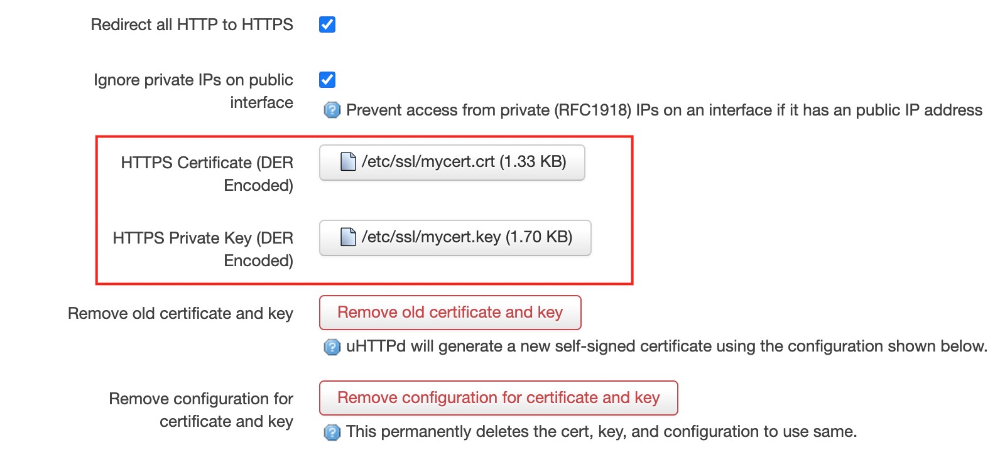

openwrt 配置 LuCI ssl 证书
openwrt 提供了一个 luci 管理界面可以通过图形化的方式进行配置管理。我们通过 lan 网地址 http 访问 luci 界面，会有一个提示不安全的链接，一般浏览器提供了一个跳过选项可以忽略警告。
但是当我们通过 wan 口地址访问 luci 界面时，新版的 chrome 会强制拒绝访问 http 不安全的链接，这样我们就无法通过外网访问 luci 界面了。
注意如果想要从 wan 口访问 luci 界面，需要配置防火墙放行，具体参考：https://blog.niekun.net/archives/1818.html
解决方法是我们给 luci 配置一个 ssl 证书，这样浏览器就会放行了。
首先安装相关程序：
opkg update && opkg install openssl-util luci-app-uhttpd
以上我们安装了 openssl 套件和 uhttpd 的 ui 配置接口，可以图形化的方式配置 uhttpd。
下面我们来生成需要的 ssl 证书文件。
首先创建文件 etc/ssl/myconfig.conf：
[req]
distinguished_name = req_distinguished_name
x509_extensions = v3_req
prompt = no
string_mask = utf8only
[req_distinguished_name]
C = US
ST = VA
L = SomeCity
O = OpenWrt
OU = Home Router
CN = luci.openwrt
[v3_req]
keyUsage = nonRepudiation, digitalSignature, keyEncipherment
extendedKeyUsage = serverAuth
subjectAltName = @alt_names
[alt_names]
DNS.1 = luci.openwrt
IP.1 = 192.168.1.1可以修改 C (country), ST (state), L (location), O (organization), OU (organization unit) 为你想要的内容。
CN 和 DNS.1 必须是一样的地址，它们表示此证书代表的域名，和 IP 是对应的。如果配置了 luci 界面地址的 hosts，这里就可以定义为对应的域名。之后我们就可以通过访问这个域名来访问 IP。
IP.1 就是 luci web 地址，设置为对应的地址即可。
配置文件保存后返回 ssl 目录：
cd /etc/ssl
执行下面的命令：
openssl req -x509 -nodes -days 730 -newkey rsa:2048 -keyout mycert.key -out mycert.crt -config myconfig.conf
会自动在当前目录下创建 mycert.key 和 mycert.crt 文件。
然后我们先通过 lan 内网访问 luci web 界面，在顶部我们可以看到多了一个 services 菜单，点击其中的 uhttpd 进入配置界面，在 HTTPS Certificate 和 HTTPS Private Key 中分别上传 crt 和 key 文件：

然后点击 save and apply。
重启 uhttpd 服务：
/etc/init.d/uhttpd restart
此时我们通过 wan 口地址访问 luci web 界面，应该就可以正常进入了。
下面我们将刚才生成的 ssl 文件加入 backup 列表。默认情况下 /etc/config 下的文件会自动进行备份。
我们进入 System → Backup/Flash Firmware，点击 configuration 栏，然后将 /etc/ssl/mycert.crt 和
/etc/ssl/mycert.key 加入列表中，点击 save 即可。
之后我们生成的备份就会包含这些文件。